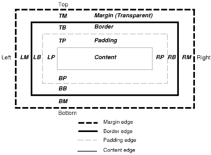
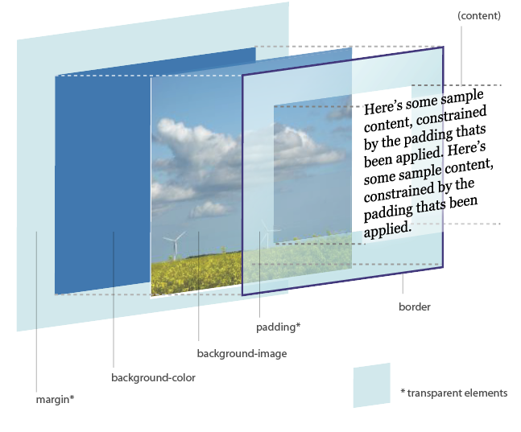

Intro to HTML & CSS
Presentation available at: http://kansascitywomenintechnology.github.io/IntroToHTMLandCSS
First, let’s set some expectations.
- No one here will learn HTML/CSS in one night.
- You can take classes everywhere and at any price. We are your study group, not your class.
- Whether it's your first session or not, everyone is on equal footing
- Stick with it.
Meet Some #LadyDevs
Laura Shields
Software Engineer, The Nerdery - Chicago
"Tangible dates lead to tangible results. 'Someday' leads to regret. Plan your dreams now. With spreadsheets."
Read more about Laura on the Nerdery's Blog!J. Alisa Duncan
Senior Software Engineer, Engaged Technologies - Kansas City
"I decided to become a developer because ______"
Image Source: LinkedIn
... And Your Mentors for Tonight!
Tonight's Agenda: HTML & CSS
- Review Last Session
- Overview of HTML/CSS
- Basic Syntax - to get you started
- Common Conventions and where to research them
- Practice troubleshooting an existing HTML/CSS page
- Beginning Your Programming Odyssey!
- Explore online professional resumes
- Use Chrome Developer Tools to inspect interesting page elements to incorporate into your own page
- Begin your page, which we will add to throughout the year.
Last Time. . . .
We talked about tools for your #LadyDev toolbelt:
- Developer Tools in Chrome - for troubleshooting and exploring elements
- Sublime Text - your text editor
- GitHub - where you can store and share your work
And so we begin. . .
What is HTML?
Hyper Text Markup Language
HTML is used for the placement or meaning of the content - header, paragraph, list versus its style (font, color, font size)
HTML Syntax highlights
Text is marked with a "tag" that gives it a purpose
- Meta Data - What is it?
- The necessity of matching opening/closing tags
- Inline formatting versus CSS Styling
- For an in-depth look, check out Codecademy or W3Schools
Meta Data
Meta Data is invisible to the reader but interacts with the reader's browser to supply necessary utility information.
code snippet
Basic Tags
place tag examples here
Inline Formatting
place tag examples here
Basic HTML Best Practices
- Every open tag should have a matching closing tag
- Be case sensitive - maintain consistency
- Indent nested tags (such as when indenting outlines)
- Don't try to mash your code together. Use enough line breaks for readability and clarity.
- Validate often - save your work and see how it looks in-browser as you progress.
Debugging Tools &Amp; Online Documentation
There are many tools you can use. Some are built into your text editor and some are separate. Here are some resources.
- Developer tools in Chrome
- W3C HTML Validator
- Mozilla Developer Network (MDN)
Lets Look at an example: "Told in a Garden"
Time to Practice!
CSS Overview
Cascading Style Sheets (CSS)
CSS does the heaving lifting with regard to the page formatting.
CSS controls how elements look, similar to the way you use MS Word styles. You can specify font color, size, and other details that pertain to all elements in an HTML document that are the same type.
!!TIP!! Remember to differentiate between the property and its value
CSS Syntax Basics
- Class Selector
- ID selector
- Box model
Class Selector
Syntax: .class
ID Selector
Syntax: #id
The Box Model
Another Way to Look at The Box Model
Time to Practice!
Remember: A good search engine is your first line of defense, and KCWiT can be your second!
- Other Online Validation Tools & Documentation Resources
2016 Coding &Cocktails Project
Where Do We Go From Here?
Next month: Introduction To Git Hub
March: Deploying your web site
In the Mean Time...
- Choose an online tutorial and work through it
- Work on your web page
- Join our Slack channel and use it whenever you have questions or get stuck!